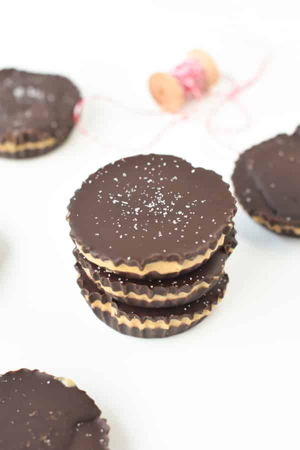

Keto Reese's Cup

Keto lovers sugar fix!
This dairy free, gluten free, sugar free, no bake, desert will have every keto eater craving more! One of the hardest parts about starting a keto diet is the lack of sugar, but this recipe will satisfy every craving.
Ingredients
- 9.5 oz sugar free dark chocolate
- 3 tablespoons coconut oil
- 1/2 cup natural peanut butter
- 1/4 cup sugar-free powdered sweetener
- 2 teaspoon almond flour
- 1/2 teaspoon vanilla extract
Steps
- Line a 12-hole muffin tray with muffin paper liners or silicone cups. Set aside.
- Melt the sugar-free chocolate with coconut in a microwave-safe bowl for 1 minute. Stop the microwave, stir chocolate, and repeat heating with 30-second intervals until all the chocolate is melted. Otherwise, melt over medium heat in a saucepan, constantly stirring with a wooden spoon until the chocolate is melted.
- Pour 1 tablespoon (15 ml) of melted chocolate at the bottom of each paper liner. You can tilt the pan slightly to help the chocolate spread all over the bottom of the paper liner.
- Repeat this step for each paper liner until the 12 paper liners are covered with melted chocolate.
- Place the tray 8-10 minutes into the freezer until the chocolate is firm.
- Set aside the bowl with the remaining melted chocolate for later in a warm place. Don't store this in the fridge. You want the mixture to stay liquid.
- In another microwave-proof mixing bowl, combine peanut butter with coconut oil. Microwave 30 seconds to soften, remove the bowl from the microwave and stir the ingredients to combine evenly.
- Stir in powdered erythritol, vanilla extract, and almond flour until it forms a slightly thick mixture.
- Remove the muffin tray from the freezer and add 2 teaspoons (10 ml) of the peanut butter filling into each cup. Use a spoon to spread the peanut butter layer evenly all over the first chocolate layer.
- Freeze the muffin tray again for 10-12 minutes until the peanut butter layer is firm.
- If the remaining melted chocolate has thickened, re-heat the bowl for 30 seconds in the microwave to soften. Stir and use it in the next steps.
- Remove the muffin tray from the freezer and spread 2 teaspoons (10 ml ) of melted chocolate on the peanut butter layer. You can hold the muffin case with one hand and tilt it while pouring the melted chocolate. This helps to spread the chocolate evenly on top of the peanut butter layer.
- Place the muffin case back into the muffin pan. Repeat until the 12 muffin cases are filled with chocolate.
- Freeze again for 8-10 minutes to set the top chocolate layer.
- Serve with a pinch of salt if desired.